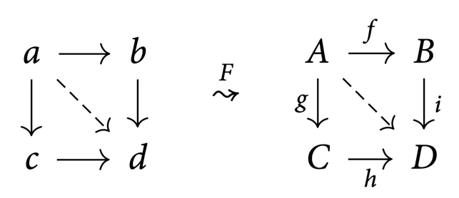
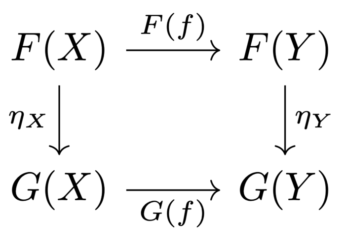
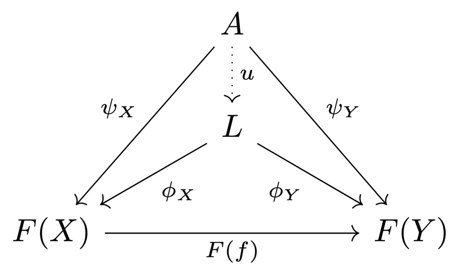
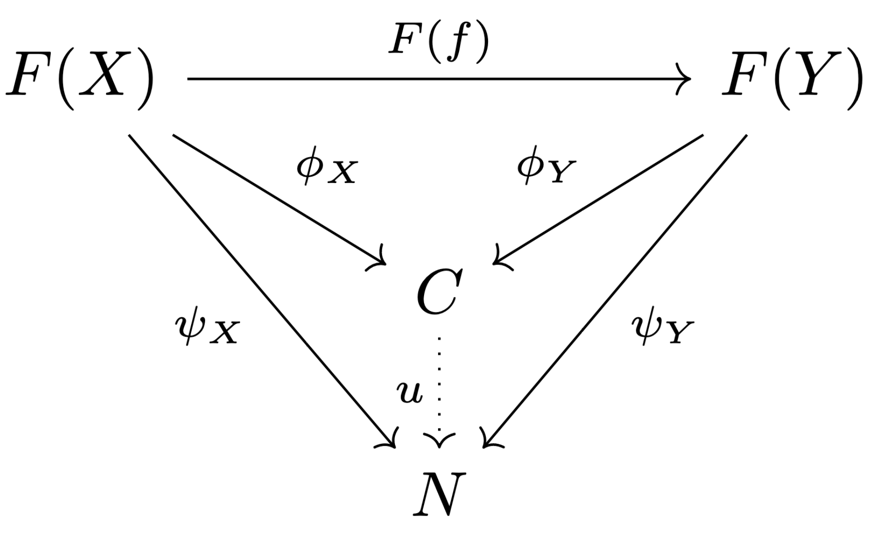

7 Categories
Categories
Example 7.1
Many areas of mathematics deal with objects of a certain type that are related pairwise through certain types of maps (or other structures):
- Set theory: sets and maps
- Linear algebra: vector spaces and linear maps
- Algebra: groups and homomorphisms, rings and homomorphisms, modules and homomorphisms
- Topology: topological spaces and continuous maps
- Metric geometry: metric spaces and 1 -Lipschitz maps
- Differential topology: manifolds and smooth maps
The common framework for all these examples is the concept of a category.
Definition 7.2
Category
A category \(\Cat\) consists of the following data:
- A class of objects \(Ob(\Cat)\).
- A class \(\Hom_\Cat(X, Y)\) of morphisms for each pair \(X, Y\) of \(Ob(\Cat)\), including a special identity morphism \(\Id_X \in \Hom(X, X)\) for each object \(X\).
- A composition operation \(\circ ∶ \Hom(X, Y) \times \Hom(Y, Z) \to \Hom(X, Z)\), satisfying \(\Id \circ f = f \circ Id = f\) and \((f \circ g) \circ h = f \circ (g \circ h)\).
Remark 7.3
- The identity morphism is unique for every object.
- A morphism \(f ∶ X \to Y\) is an isomorphism if there is another morphism \(f^{−1} ∶ Y \to X\) such that \(f^{−1} \circ f = \Id_X\) and \(f \circ f^{−1} = \Id_Y\).
- A full subcategory of a category \(\Cat\) is a category \(\Cat′\) whose objects are a subclass of \(\Ob(\Cat)\), and \(\Hom_{\Cat′}(X, Y) = \Hom_\Cat (X, Y)\).
- Every category \(\Cat\) has an opposite category \(\Cat^\op\):
- The objects are the same: \(\Ob(\Cat^\op) = \Ob(\Cat)\).
- The morphisms are formally reversed: \(\Hom_{\Cat^\op} (X, Y) = \Hom_\Cat (Y, X)\).
Remark 7.4
Often, the class of objects is not a set.
- For example, there is no set of all sets.
- If the objects of a category form a set, it is a small category.
Often, the classes of morphisms \(\Hom(X, Y)\) are sets. Then, we talk about a locally small category.
In Zermelo-Fraenkel set theory, the notoin of a class is informal. Classes are described indirectly by logical formulas.
We omit such set-theoretic questions in this course.
Example 7.5
The following examples can also be viewed as categories:
- A group can be viewed as a certain category with one object:
- The morphisms are the elements of the group, and every morphism is invertible.
- Composition is defined as the group operation.
- The identity morphism is the neutral element of the group.
- More generally, a monoid is a category with one object.
- Classically, a monoid is a set with an associative operation and a neutral element.
- A groupoid is a small category where every morphism is invertible.
- A poset \((P, \le)\) is a category:
- The objects are \(P\).
- There is a single morphism \(x \to y\) if \(x \le y\), and no morphism \(x \to y\) if \(x \not\le y\).
Functors
Definition 7.6
Functor
A functor is a structure-preserving mapping between two categories. A functor \(F\) from \(\Cat\) to \(\D\) assigns
- to each object \(X\) of \(\Cat\) an object \(F(X)\) of \(\D\), and
- to each morphism \(f ∶ X \to Y\) of \(\Cat\) a morphism \(F(f) ∶ F(X) \to F(Y)\) of \(\D\),
- respecting identities: \(F(\Id) = \Id\),
- and composition: \(F(f \circ g) = F(f) \circ F(g)\).
As an important consequence, functors preserve isomorphisms.
Example 7.7
The free functor \(F : \bm{\operatorname{Set}} \to \bm{\operatorname{Vect}}_k\) assigns to a set \(B\) the vector space freely generated by the basis \(B\).
The forgetful functor \(U : \bm{\operatorname{Vect}}_k \to \bm{\operatorname{Set}}\) assigns to a vector space \(V\) the set of its vectors, forgetting the vector space structure.
If \(P, Q\) are posets, then a functor \(P \to Q\) is an order-preserving map.
For any locally small category \(\Cat\) and any object \(X\) of \(\Cat\), we have a functor \(\Hom(X, −) ∶ \Cat \to \bm{\operatorname{Set}}\) given by assigning
- to any object \(Y : \Cat\) the set of morphisms \(\Hom(X, Y)\), and
- to any morphism \(f ∶ Y \to Z\) the map given by postcomposition with \(f\):
similarly, by precomposition, we obtain a functor \(\Hom(−, X) ∶ \Cat^\op \to \bm{\operatorname{Set}}\).
A commutative diagram in \(\Cat\) encodes a functor \(F\) from some poset \(P\) to \(\Cat\):

Natural transformations
Given two categories \(\Cat, \D\), the functors from \(\Cat\) to \(\D\) form a category.
Definition 7.8
Natural transformation
Let \(F, G\) be functors from \(\Cat\) to \(\D\). A natural transformation \(\eta\) from \(F\) to \(G\) assigns to every \(X\) in \(\Cat\) a morphism \(\eta_X ∶ F(X) \to G(X)\) in \(\D\), such that for every morphism \(f ∶ X \to Y\) in \(\Cat\), the following diagram commutes:

- We sometimes write \(\eta ∶ F \Rightarrow G\).
- If \(\eta_X\) is an isomorphism for every \(X\), we call \(\eta\) a natural isomorphism, and say that \(F\) and \(G\) are isomorphic.
Definition 7.9
Equivalence of categories
An equivalence of two categories \(\Cat\) and \(\D\) consists of two functors \(F ∶ \Cat \to \D\) and \(G ∶ \D \to \Cat\) such that \(G \circ F\) anf \(F \circ G\) are naturally isomorphic to the identity functors.
Definition: Fully faithful, essentially surjective
A functor \(F ∶ \Cat \to \D\) is fully faithful if for every pair of objects \(X, Y \in \Cat\), the functor \(F\) induces a bijection \(\Hom_\Cat(X, Y) \cong \Hom_\D(F(X), F(Y))\).
A functor \(F ∶ \Cat \to \D\) is essentially surjective if every object \(Z\) in \(\D\), is isomorphic to some object of the form \(F(X)\) for some \(X\) in \(\Cat\).
Proposition 7.10
Single-functor equivalence
A functor \(F ∶ \Cat \to \D\) between locally small categories yields an equivalence of categories \(\iff\) \(F\) is fully faithful and essentially surjective.
Example 7.11
The category \(\bm{\operatorname{vect}}_k\) of finite-dimensional vector spaces is equivalent to the category \(\bm{\operatorname{Mat}}_k\) of finite-dimensional matrices over \(k\).
- objects \(\{k^n \mid n \in \N\}\)
- morphisms \(k^n \to k^m\) the \(m \times n\)-matrices over \(k\).
The functor \(L\) sending a matrix to the corresponding linear map is fully faithful and essentially surjective.
Limits
Definition 7.12
Diagram
Let \(\J\) be a small category. A functor \(F ∶ \J \to \Cat\) is also called a diagram of shape \(\J\).
A cone over \(F\) consists of
- an object \(A\) in \(\Cat\) (the apex of the cone),
- and a morphism \(\psi_X : A \to F(X)\) for every object \(X\) in \(\J\)
such that for every morphism \(f ∶ X \to Y\) in \(\J\), the following diagram commutes:

A limit over \(F\) is a terminal cone \((L, \phi)\): every other cone \((A, \psi)\) over \(F\) factors uniquely through \((L, \phi)\).
There is a dual notion of a colimit (all arrows are reversed).

Example 7.13
A pullback is a limit over a diagram of the shape \(A \to B \gets C\) (a cospan); a pushout is a colimit over a diagram of the shape \(A \gets B \to C\) (a span).
A product is a limit over a diagram with a discrete indexing category (only identity morphisms); a coproduct (sum) is a limit of a colimit over such a diagram.
Adjoint functors
Example 7.14
Recall that a linear map \(f ∶ V \to W\) is determined uniquely by its restriction to a basis \(B\) of \(V\), and vice versa.
- Using the free functor \(F\), we have a canonical isomorphism \(V \cong F(B)\).
- Using the forgetful functor \(U\), the above statemant can thus be written as \(\Hom_{\bm{\operatorname{Vect}}_k}(F(B), W) \cong \Hom_{\bm{\operatorname{Set}}}(B, U(W))\).
Let \(X\) be a locally path-connected space, and \(Y\) be a discrete space. Then, \(f : X \to Y\) is continuous \(\iff f\) is constant on each path-connected component of \(X\).
Using the discrete topology functor \(D\) and the full subcategory \(\bm{\operatorname{lpcTop}}\) of locally path-connected spaces, the above can be written as \(\Hom_{\bm{\operatorname{Set}}}(\pi_0(X), P) \cong \Hom_{\bm{\operatorname{lpcTop}}}(X, D(P))\).
A Galois connection between two posets \((P, \le), (Q, \le)\) consists of to order-preserving maps \(f ∶ P \to Q, g ∶ Q \to P\) such that \(f(x) \le y \iff x \le g(y) \forall x \in P, y \in Q\).
Interpreting \(P, Q\) as categories, the above can be written as \(\Hom_Q(f(x), y) \cong \Hom_P(x, g(y))\).
Definition 7.15
An adjunction between two locally small categories \(\Cat, \D\) consists of two functors \(F ∶ \Cat \to \D\) and \(G ∶ \D \to \Cat\) such that for all objects \(X\) in \(\Cat\) and \(Y\) in \(\D\), there is a bijection
and these are natural in \(X\) and \(Y\): they assemble to natural isomorphisms
In this case, \(F\) is left adjoint to \(G\), and \(G\) is right adjoint to \(F\), written as \(F \dashv G\).
Theorem 7.16
Right adjoint preserves limits
\(\begin{align*} \text{Let } & G ∶ \D \to \Cat \text{ be right adjoint functor} \\ & (L, \phi) \text{ be a limit over a diagram } H ∶ \J \to \D. \end{align*}\)
Then, \((G(L), G(\phi))\) is a limit over the diagram \(G \circ H ∶ \J \to \Cat\).
Dually, left adjoints preserve colimits.